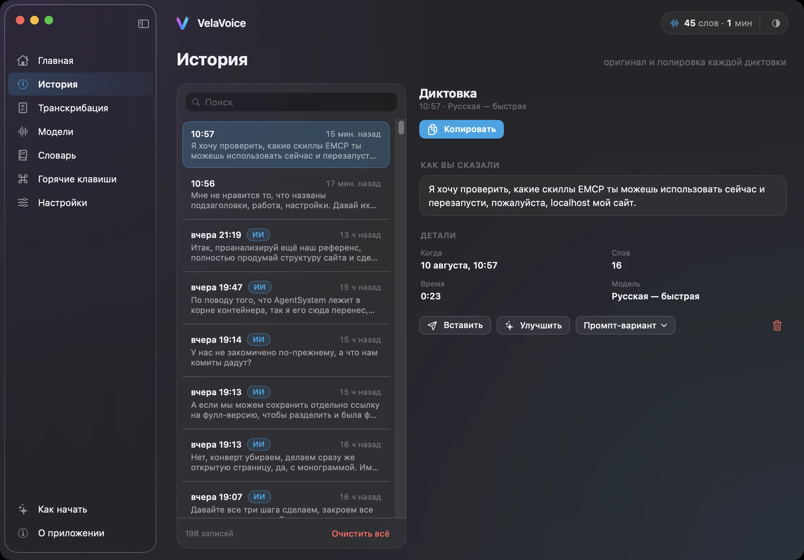

Модель ставит только знаки и регистр, слова остаются из распознанного.
- Мешало
- Локальная модель полировки меняла вместе со знаками сами слова: в 6 диктовках из 9 текст выходил не тем, что я сказал. Фраза «я сделал правки по» обрезалась до «я».
- Решил
- Из ответа модели беру только знаки препинания и регистр, слова остаются из распознанного текста. На тех же девяти диктовках слова целы во всех. Исходный текст хранится в истории рядом с итогом.
